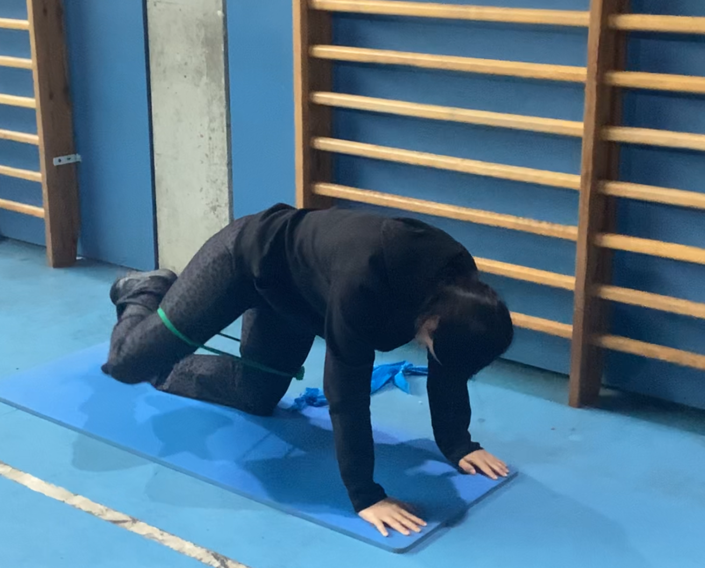

Abductors – Intermedi
COM FER-HO PAS A PAS:
- Col·loca una banda sota el teu maluc, col·locant-te a quatre pates.
- Mans sota les espatlles i genolls recolzats sobre la banda.
- Activa el core i mantén l’esquena recta.
- Eleva una cama cap amunt i enrere, mantenint el genoll flexionat.
- Puja fins que el glutis estigui totalment contraït.
- Baixa la cama lentament sense perdre la tensió.
- Repeteix amb l’altra cama.
SÈRIES:
- 3 sèries de 15–20 repeticions per cama.
- Descans de 30–45 segons entre sèries.
CONSELLS:
- La banda fa que tinguis més recorregut, aprofita per pujar una mica més.
- Evita moure la pelvis o arquear l’esquena.
- Controla molt la baixada, és on més treballen els abductors.
